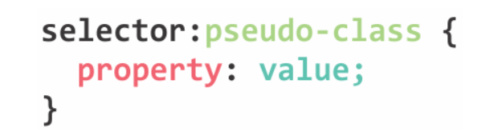
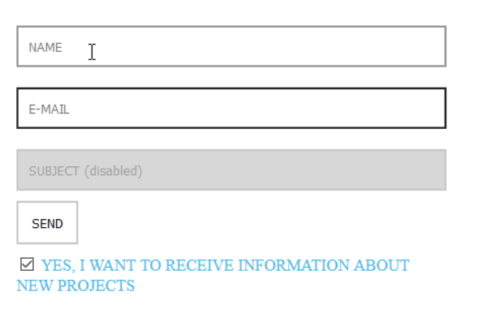

Pseudo-clasele sunt continuări logice, respectiv cuvinte-cheie care se adaugă la sfârşitul selectorului, selectându-se astfel elemente în situaţii speciale. Pseudo-clasele se separă de selectori prin folosirea caracterului două puncte (:), aşadar, forma de bază a utilizării pseudo-claselor arată ca în imaginea
Prin folosirea pseudo-claselor este posibilă, de exemplu, selectarea elementului deasupra căruia este plasat cursorul mouse-ului, selectarea elementului cu un focus sau selectarea elementului care este ultimul descendent al părintelui său.
Pseudo-clasele stărilor se folosesc cel mai des pentru stilizarea linkurilor şi a elementelor input. Totuşi, utilizarea lor nu este limitată doar la elementele de acest tip, ceea ce vom prezenta mai târziu prin exemple practice.
/* unvisited link */
a:link {
color: red;
text-decoration: none;
}
/* visited link */
a:visited {
color: green;
}
/* mouse over link */
a:hover {
color: blue;
}
/* focused link */
a:focus {
color: black;
}
/* selected link */
a:active {
color: yellow;
}
Configurarea acestor pseudoclase se vor efectua exact in ordinea de mai sus pentru a avea efect.
:link
Pseudo-clasa :link stilizează toate linkurile care nu sunt vizitate. Este logic să se pună întrebarea în ceea ce priveşte justificarea folosirii acestei pseudo-clase pentru selectarea linkurilor, având în vedere că o operaţie identică este executată şi de selectorul de tip a. Care este, de fapt, scopul utilizării acestei pseudo-clase? Selectorul de tip a selectează toate elementele a, indiferent dacă acestea au definit atributul href. Acesta nu este cazul în timpul utilizării pseudo-clasei :link, care selectează doar elementele de tip a care au definit atributul href.
Pseudo-clasa :link joacă un rol important în ierarhia celorlalte pseudo-clase pentru stilizarea linkurilor. Prin urmare, pseudo-clasele pentru stilizarea linkurilor trebuie specificate în ordinea în care sunt specificate în exemplul prezentat. Aceasta înseamnă că mai întâi trebuie specificat selectorul :link, apoi :visited, după care urmează :hover şi în cele din urmă :active.
:visited
Pseudo-clasa :visited se foloseşte pentru selectarea linkurilor vizitate. Implicit, aceste linkuri obţin de la browser o altă culoare a textului, care se poate influenţa tocmai prin folosirea selectorului cu pseudo-clasa :visited.
:hover
Starea unui element în care săgeata mouse-ului se află deasupra lui, se poate selecta prin folosirea pseudo-clasei :hover. Această pseudo-clasă nu este limitată exclusiv la linkuri, ci deseori este folosită pe orice alt element:
#some-div:hover {
background-color: blue;
}
Cu stilizarea definită, dacă se trece mouse-ul peste elementul div, culoarea de fundal a acestuia va deveni albastră.
În anumite situaţii, browserul adaptează automat aspectul cursorului. Tocmai o astfel de situaţie este valabilă şi pentru linkuri, când browserul transformă automat săgeata mouse-ului în cursor/indicator atunci când aceasta se află deasupra elementului a. Dacă trebuie influenţat independent aspectul săgeţii mouse-ului, se poate folosi proprietatea cursor:
#some-div:hover {
background-color: blue;
cursor: pointer;
}
:active
În exemplul anterior este folosită pseudo-clasa :active pentru stilizarea stării în care linkul este activat din partea utilizatorului. Când spunem activarea linkului, ne referim la momentul în care utilizatorul dă clic pe acest link. Prin urmare, linkul obţine culoare galbenă, dar doar atât timp cât se dă clic pe el. Cu alte cuvinte, linkul din exemplul prezentat va fi de culoare galbenă din momentul în care utilizatorul dă clic deasupra elementului a şi până când eliberează butonul mouse-ului.
:focus
seudo-clasa care se identifică deseori cu pseudo-clasa :active, este clasa :focus. Totuşi, aceste două pseudo-clase au o funcţie cu totul diferită. Pseudo-clasa :focus selectează elementul care pe pagină deţine un focus, ceea ce, practic, înseamnă că un astfel de element este pregătit să accepte inserarea de pe dispozitivul de intrare al calculatorului (cel mai des de pe tastatură).Tot timpul pseudoclasa focus se va plasa inainte de pseudo-clasa active pentru a avea efect. Pseudo-clasa focus este acceptata doar de elementele cu atributul href insa se poate aplica si altor elemente utilizand atributul global tabindex Următorul exemplu ilustrează regula CSS cu selectorul :focus:
a:focus {
color: black;
}
Pe pagina HTML doar un singur element poate deţine focus într-un anumit moment. În majoritatea browserelor, focusul se poate muta printre elemente folosind tasta Tab de pe tastatură. Totuşi, nu toate elementele HTML pot accepta focus. Conform ultimei specificaţii, focusul poate fi acceptat de elementele cu atributul href, cum sunt elementele input, select şi textarea. Pe lângă aceste elemente HTML standard, care pot accepta focusul, dezvoltatorul îi poate atribui unui alt oarecare element posibilitatea de a obține focusul folosind atributul global tabindex:
<div class="box" tabindex="1"></div>
În situaţia ilustrată în exemplu, pe elementul div este setat atributul global tabindex, aşadar, în acest fel se permite ca acest element să obţină focus. Valoarea atributului tabindex determină ordinea în care elementele de pe pagină vor obţine focusul.
Pe lângă selectarea linkurilor, pseudo-clasele se folosesc deseori şi pentru selectarea elementelor pentru formularele HTML. Imaginea de mai jos ilustrează unul dintre formularele HTML la al cărui stilizare au participat pseudo-clasele.
În imaginea 2.3. putem observa câteva lucruri. Focusul deţine elementul input pentru inserarea adresei de e-mail (culoarea cadrului mai închisă). Săgeata mouse-ului este plasată deasupra elementului input pentru inserarea numelor. Elementul pentru inserarea titlului mesajului (subject) este dezactivat, ceea ce este evidenţiat clar cu o altă culoare de fundal. Textul de lângă elementul checkbox de tip input este colorat cu albastru.
Codul HTML cu care se creează formularul prezentat cu elementele input este următorul:
<div id="contact-wrapper">
<form>
<input type="text" name="name" id="name" placeholder="NAME">
<input type="text" name="email" id="email" placeholder="E-MAIL">
<input disabled type="text" name="subject" id="subject" placeholder="SUBJECT (disabled)">
<input type="submit" name="submit" id="submit" value="SEND">
<input type="checkbox" name="subscribe" id="subscribe">
<label for="subscribe">YES, I WANT TO RECEIVE INFORMATION ABOUT NEW PROJECTS</label>
</form>
</div>
Elementele input sunt stilizate cu următoarele reguli CSS:
/*STYLES FOR INPUT TEXT FIELDS*/
input[type="text"] {
width: 100%;
padding: 10px;
border: solid 2px #c9c9c9;
margin: 10px 0px 10px 0px;
}
input[type="text"]:hover{
border: solid 2px #969696;
}
input[type="text"]:focus{
border: solid 2px #262626;
}
input[type="text"]:disabled {
background-color: rgba(201, 201, 201, 0.75);
}
Se poate observa că pentru selectare se foloseşte combinaţia de selectori bazaţi pe atribute şi pseudo-clase. Pentru elementele input de tip text sunt definite trei stări speciale prin folosirea pseudo-claselor: hover, focus şi disabled. La fel ca la linkuri, pseudo-clasa :hover va selecta elementul în situaţiile în care săgeata mouse-ului este plasată deasupra elementului. Tocmai de aceea, culoarea cadrului elementului input se schimbă când peste acest element se trece cu săgeata mouse-ului. Pseudo-clasa :focus selectează elementul care are focus pe pagină. Elementul poate obţine focus prin clic sau prin folosirea tastaturii (tastei Tab). Prin stilizarea prezentată este definit că elementul input, care este în focus, va avea o culoare mai închisă a cadrului. În cele din urmă, prin folosirea pseudo-clasei :disabled este definită culoarea de fundal pentru elementele dezactivate. Elementele dezactivate sunt cele ale căror atribut este setat la disabled. Având în vedere că în codul HTML este dezactivat elementul pentru inserarea titlurilor (subject), folosind atributul menţionat, o stilizare definită astfel se va aplica asupra lui. Așadar, cu stilizarea prezentată este definit că elementul pentru inserarea titlului mesajului va avea o culoare de fundal mai închisă decât celelalte.
Şi pentru elementul input de tip submit este definită stilizarea prin folosirea câtorva pseudo-clase:
/*STYLES FOR INPUT SUBMIT ELEMENT*/
input[type="submit"] {
padding: 10px;
border: solid 2px #c9c9c9;
background-color: rgba(201, 201, 201, 0);
display: block;
margin-bottom: 10px;
}
input[type="submit"]:hover {
border: solid 2px #969696;
}
input[type="submit"]:focus{
border: solid 2px #262626;
}
input[type="submit"]:active {
border: solid 2px #41B9E1;
}
Pentru captarea stărilor speciale ale elementului input de tip submit, în timpul definirii regulii CSS, sunt folosite pseudo-clasele :hover, :focus şi :active.
/*STYLES FOR INPUT CHECKBOX ELEMENT*/
input[type="checkbox"]:checked + label {
color: #41B9E1;
}
Regula conţine pseudo-clasa :checked, prin care regula CSS se va aplica doar în cazul în care este bifat elementul checkbox. Pe lângă aceasta, în acest exemplu mergem un pas înainte şi efectuăm stilizarea elementului label când este bifat elementul checkbox. Cu alte cuvinte, CSS permite ca, în timpul intrării elementului într-una din stările speciale, să se stilizeze un alt element HTML. Cu alte cuvinte: când se bifează elementul checkbox, culoarea textului din elementul label se schimbă în albastru.